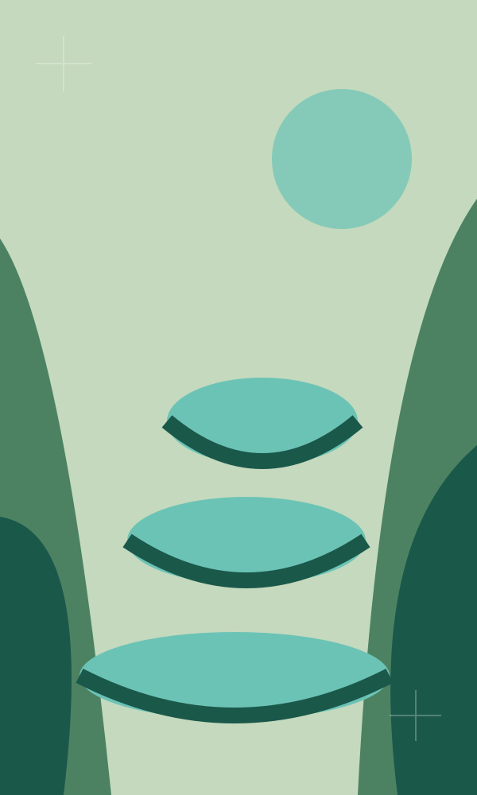

EXPLORA GUATEMALA, CAPÍTULO A CAPÍTULO
Un viaje por
nuestras realidades.
Cada semana, una nueva mirada.
Cada capítulo, un lugar de Guatemala.
 Leer capítulo ↗Capítulo 01
Leer capítulo ↗Capítulo 01 PróximamenteCapítulo 02
PróximamenteCapítulo 02 PróximamenteCapítulo 03
PróximamenteCapítulo 03
PróximamenteCapítulo 04 PróximamenteCapítulo 05
PróximamenteCapítulo 05PróximamenteCapítulo 06
01 / 06 CAPÍTULOS DISPONIBLES
Las próximas portadas proponen destinos visuales.
Sus temas se incorporarán según los contenidos del curso.